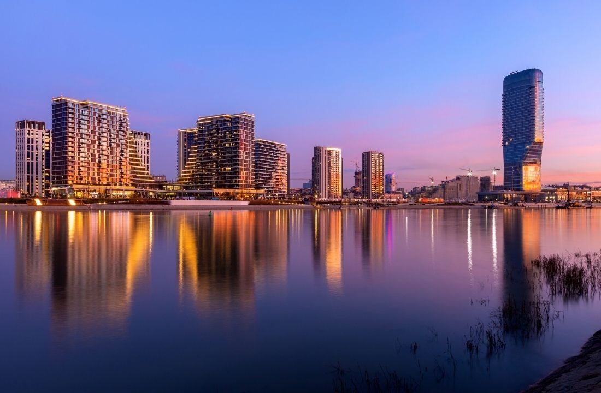
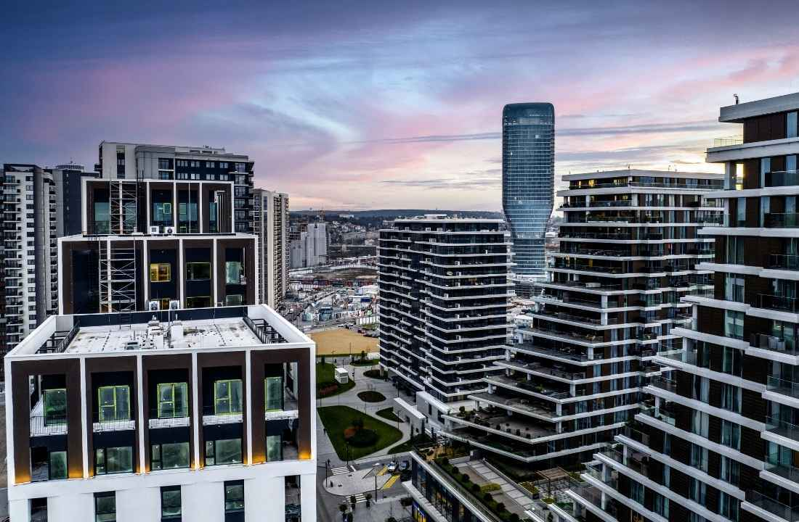
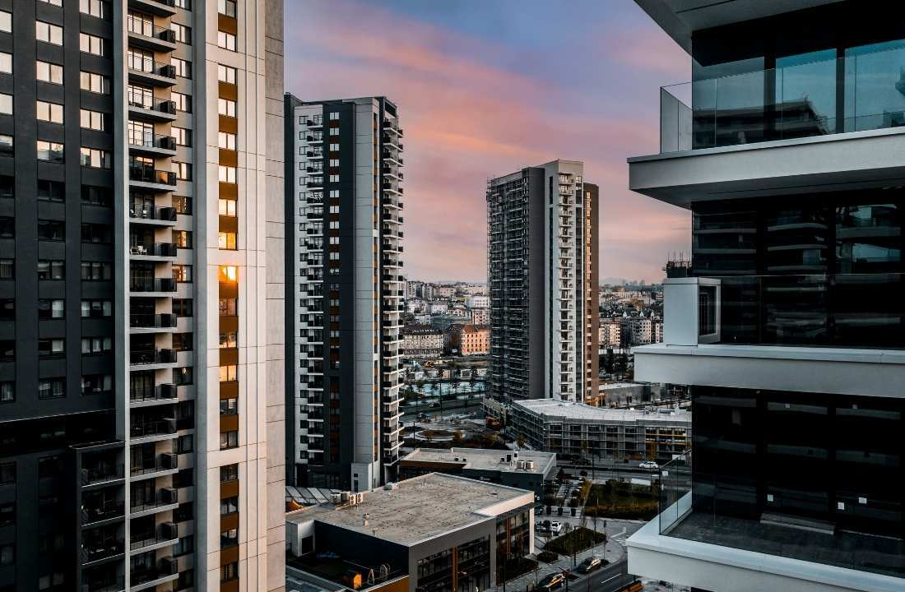

-A1 SELIDBE BEOGRAD-
BEOGRAD NA VODI SELIDBE
EFIKASNE USLUGE PRESELJENJA SURČIN
Selidba u Beograd na vodi zahteva mnogo više od običnog prevoza stvari sa jedne adrese na drugu. Savremeni stambeni kompleksi, podzemne garaže, kontrolisani pristupi zgradama i specifična pravila useljenja zahtevaju dobru organizaciju i iskustvo u radu na ovoj lokaciji. Firma A1 Selidbe pruža kompletnu uslugu preseljenja za fizička i pravna lica, vodeći računa o svakom detalju kako bi ceo proces protekao brzo, sigurno i kvalitetno. Zahvaljujući dugogodišnjem iskustvu i profesionalnom timu, uspešno realizujemo preseljenja svih vrsta na području Beograda na vodi, bez obzira na obim posla i spratnost objekta.
Sve veći broj ljudi odlučuje se za život u ovom modernom delu grada, zbog čega je potražnja za kvalitetnim uslugama preseljenja iz godine u godinu u porastu. Bilo da se useljavate u novi stan, selite iz druge opštine ili iz jednog kompleksa u drugi, A1 selidbe Beograd obezbeđuju pouzdanu logistiku i profesionalnu podršku tokom čitavog procesa. Na raspolaganju su vam odgovarajuća transportna vozila, oprema za zaštitu nameštaja i obučen tim koji zna kako da bezbedno prenese i najvrednije predmete bez oštećenja.
Posebnu pažnju posvećujemo zaštiti imovine tokom transporta i unošenja stvari u objekat. Nameštaj, bela tehnika, elektronski uređaji, umetnine i ostali osetljivi predmeti pažljivo se pakuju i obezbeđuju kako bi na novu adresu stigli u besprekornom stanju. Naš cilj je da vam omogućimo da se u novi prostor uselite bez brige i dodatnih obaveza. Upravo zbog toga veliki broj klijenata preporučuje nas kao pouzdanog partnera za selidbe u Beogradu na vodi.
Pored stambenih selidbi, uspešno organizujemo i preseljenje firmi i kancelarija, lokala i kompanija koje posluju u ovom delu Beograda. Fleksibilni termini, precizno planiranje i prilagođavanje zahtevima klijenata omogućavaju nam da svako preseljenje izvedemo efikasno i u dogovorenom roku. Ukoliko tražite profesionalnu agenciju za selidbe u Beograd na vodi, A1 predstavlja siguran izbor za brzo, organizovano i bezbedno preseljenje na bilo koju lokaciju u okviru ovog prestižnog naselja.

KAKO IZGLEDA ORGANIZACIJA SELIDBE U BEOGRAD NA VODI
Sigurno da se selidbe u Beograd na vodi razlikuju se od standardnih preseljenja u drugim delovima grada. Reč je o modernom stambeno-poslovnom kompleksu sa jasno definisanim pravilima pristupa, korišćenja zajedničkih prostora i organizacije useljenja. Zbog toga je neophodno da svaki korak bude unapred isplaniran kako bi sve proteklo bez zastoja i neprijatnih situacija. A1 agencija za selidbe zna kako da uskladi termine sa upravom zgrade, organizuje transport i obezbedi nesmetan unos stvari u stan ili poslovni prostor. Upravo dobra organizacija predstavlja ključ uspešne organizacije.
Najava preseljenja upravi zgrade i obezbeđenju
Jedna od prvih stvari koje treba uraditi jeste blagovremena najava upravi objekta ili službi obezbeđenja. Većina zgrada u Beogradu na vodi ima precizno definisana pravila kada je u pitanju useljenje i istovaranje stvari. U pojedinim objektima potrebno je unapred rezervisati termin za korišćenje teretnog lifta ili obavestiti recepciju o dolasku vozila transport nameštaja.
Na primer u jednom našem slučaju prilikom preseljenja porodice iz Zemuna u jedan od novijih stambenih kompleksa u Beogradu na vodi, bilo je potrebno nekoliko dana ranije prijaviti termin useljenja kako bi obezbeđenje omogućilo pristup garaži i rezervisalo lift za transport nameštaja. Zahvaljujući dobroj organizaciji, kompletno preseljenje iz Zemuna završeno je bez čekanja i nepotrebnih zadržavanja.
Korišćenje garaža i teretnih liftova
Za razliku od mnogih starijih delova Beograda gde se stvari često unose direktno sa ulice, u Beogradu na vodi se veliki deo selidbe odvija kroz podzemne garaže i servisne prolaze. Transportna vozila se parkiraju na unapred određenim mestima, nakon čega se stvari prenose do lifta koji vodi do željenog sprata.
Ovakav način rada zahteva dodatnu pažnju i preciznost. Potrebno je pravilno rasporediti i spakovati stvari, zaštititi osetljive predmete i organizovati tim tako da se lift koristi što efikasnije. Kada se seli veći stan sa više soba, često je neophodno napraviti detaljan plan unošenja kako bi se izbegla gužva i nepotrebno zadržavanje zajedničkih prostorija.

Zaštita liftova, hodnika i zajedničkih prostora
Posebna pažnja tokom selidbe u Beograd na vodi posvećuje se očuvanju zajedničkih delova zgrade. Liftovi, hodnici, ulazni prostori i prolazi predstavljaju zajedničku imovinu svih stanara, pa je veoma važno da tokom prenosa stvari ne dođe do njihovog oštećenja.
Naša profesionalna ekipa koriste zaštitne ambalaže, kartonske obloge i posebne materijale kojima se štite osetljive površine. Prilikom jednog preseljenja luksuznog stana koje smo obavljali u blizini Savske promenade bilo je potrebno preneti veliki trpezarijski sto od punog drveta. Sto je pažljivo umotan zaštitnim materijalom, a prolazi kroz koje je prolazio dodatno su obezbeđeni kako bi se sprečilo čak i najmanje oštećenje zidova ili lift kabine.
Poštovanje termina i precizna organizacija vremena
Stanari i uprave objekata u Beogradu na vodi veliku pažnju posvećuju poštovanju dogovorenih termina. Zbog toga je važno da ekipa za selidbu stigne na vreme i da posao bude organizovan prema unapred definisanom planu. Kašnjenja mogu dovesti do problema sa zauzećem garažnih mesta ili promenom rasporeda drugih stanara koji se istog dana useljavaju ili iseljavaju.
Dobra priprema podrazumeva da su stvari unapred spakovane, da je vozilo odgovarajuće veličine i da su svi članovi tima upoznati sa planom rada. Na taj način kompletno preseljenje u Beograd na vodi može biti završeno znatno brže nego što većina klijenata očekuje, čak i kada je reč o selidbama velikih stanova ili poslovnim prostorima.
Unos luksuznog i osetljivog nameštaja
Veliki broj stanova u Beogradu na vodi opremljen je kvalitetnim i skupocenim nameštajem, zbog čega je neophodno posebno voditi računa o svakom komadu tokom transporta. Garniture po meri, mermerni stolovi, staklene vitrine, umetničke slike i moderna tehnika zahtevaju dodatnu zaštitu i pažljivo rukovanje.

Svakako da selidba u Beograd na vodi zahteva više planiranja i organizacije nego klasična preseljenja, ali uz stručan tim i dobro pripremljen logistički plan ceo proces može proteći brzo, bezbedno i bez stresa. Naša A1 agencija za selidbe poznaje pravila objekata, način funkcionisanja pristupnih puteva i procedure koje omogućavaju da useljenje u novi dom ili poslovni prostor bude završeno efikasno i u dogovorenom roku.
VRŠIMO PRESELJENJE U SVE OBJEKTE I KOMPLEKSE U BEOGRADU NA VODI
A1 Selidbe uspešno organizuju preseljenja u svim stambenim i poslovnim objektima u okviru naselja Beograd na vodi. Zahvaljujući iskustvu stečenom na brojnim realizovanim preseljenjima, upoznati smo sa procedurama pristupa i pravilima koja važe u modernim stambenim kompleksima. Bez obzira da li se useljavate u manji stan, luksuzni apartman, penthaus ili poslovni prostor, naš tim obezbeđuje sigurnu i efikasnu organizaciju celokupnog preseljenja.
Preseljenje obavljamo u svim delovima Beograda na vodi, uključujući najpoznatije stambene i poslovne komplekse:
- BW Residences
- BW Vista
- BW Parkview
- BW Terraces
- BW Aurora
- BW Arcadia
- BW Metropolitan
- BW Simfonija
- BW Quartet kompleks (Quartet, Quartet 2 i Quartet 3)
- BW Maestra
- BW Diva
- BW Iskra
- BW Riviera
- BW Libera
- BW Eterna
- BW King's Park Residences
- Kula Beograd i okolne luksuzne rezidencijalne objekte
Pored navedenih lokacija, vršimo selidbe u svim novoizgrađenim i budućim objektima u okviru Beograda na vodi, uz poštovanje svih pravila koja se odnose na korišćenje zajedničkih prostorija, liftova, garaža i pristupnih puteva.